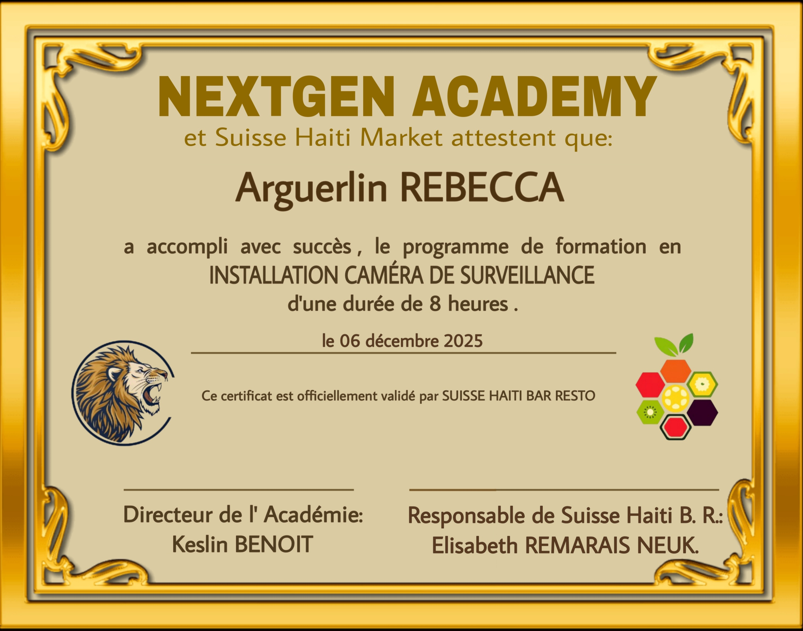

Yon kominote legal e repite
Wòl nou se fòme e ankouraje lidè, kreyatè, ak antreprenè kap kreye opòtinite isit lakay yo pou bati avni yo.
Nou kwè fòtman ke avni Ayiti chita sou 3 poto mitan sa yo, ki se : Art, edikasyon ak teknoloji.

Ekip la

THOMAS KABÉ
Formateur principal & responsable des opérations
FRANCESSE GABRIEL
Responsable administrative & assistante